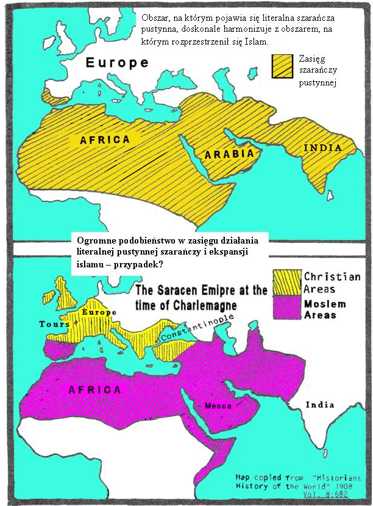
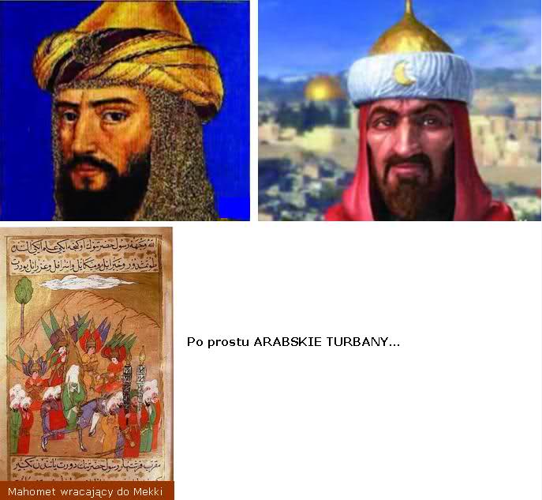
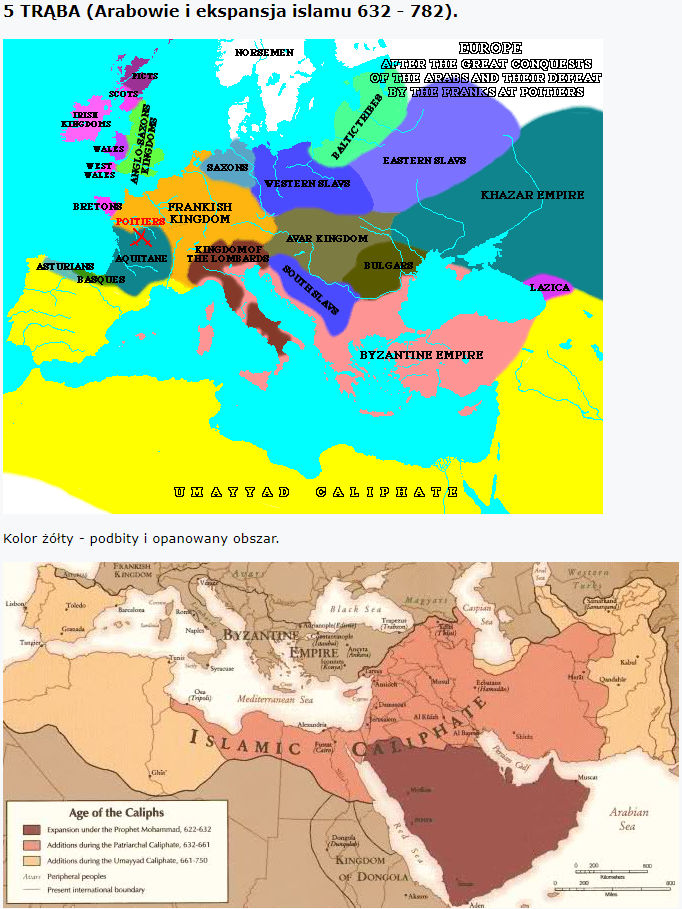

.
Rozdział 9
Piąta trąba.
„I zatrąbił piąty anioł; i widziałem gwiazdę, która spadła z nieba na ziemię; i dano jej klucz od studni otchłani. (2) I otwarła studnię otchłani. I wzbił się ze studni dym jakby dym z wielkiego pieca, a słońce i powietrze zaćmiły się od dymu ze studni. (3) A z tego dymu wyszły na ziemię szarańcze, którym dana została moc, jaką jest moc skorpionów na ziemi. (4) I powiedziano im, aby nie wyrządzały szkody trawie, ziemi ani żadnym ziołom, ani żadnemu drzewu, a tylko ludziom, którzy nie mają pieczęci Bożej na czołach. (5) I nakazano im, aby nie zabijały ich, lecz dręczyły przez pięć miesięcy; a ból przez nie wywołany był jak ból od ukłucia skorpiona, gdy ukłuje człowieka. (6) A w owe dni będą ludzie szukać śmierci, lecz jej nie znajdą, i będą chcieli umrzeć, ale śmierć omijać ich będzie. (7) Z wyglądu szarańcze te podobne były do koni gotowych do boju, a na głowach ich coś jakby złote korony, a twarze ich jakby twarze ludzkie. (8) A włosy miały jak włosy kobiece, a zęby ich były jak u lwów. (9) Miały też pancerze niby pancerze żelazne, a szum ich skrzydeł jak turkot wozów wojennych i wielu koni pędzących do boju. (10) Miały też ogony podobne do skorpionowych oraz żądła, a w ogonach ich moc wyrządzania ludziom szkody przez pięć miesięcy. (11) I miały nad sobą jako króla anioła otchłani, którego imię brzmi po hebrajsku Abaddon, po grecku zaś imię jego brzmi Apollyon (Niszczyciel). (12) Jedno "biada" minęło; oto nadchodzą jeszcze po tamtym dwa następne "biada".” (Objawienie 9:1-12).
Literalna szarańcza pustynna, pożera wszystko, co stanie jej na drodze, pojawia się nagle wielka chmura, która potrafi przesłonić słońce. Na moment robi się ciemno, owady opadają na pola i ogołacają je doszczętnie. Zarówno tempo, w jakim to się dzieje, jak i rozmiary zniszczeń są zdumiewające. Plaga szarańczy jest jedną z najpoważniejszych plag basenu Morza Śródziemnego.
Głos piątej trąby jest jednocześnie „pierwszym biada”. Wypełnieniem tego proroctwa jest niewątpliwie islam.
Bóg zezwolił na zaistnienie narodu (piąta trąba), w odpowiedzi na odstępcze „chrześcijaństwo”, prześladujące wiernych Prawdzie.
Islam wykorzenił ówczesne pogańskie „chrześcijaństwo” z terenów, na których przez setki lat panowało: z południowo-zachodniej Azji, Afryki Północnej, dolin Eufratu i Nilu, ze wschodnich i południowych wybrzeży Morza Śródziemnego w tym z Palestyny.
Syria padła w 634 roku, Jerozolima w 637, Egipt w 638, Persja w 640, Afryka Północna w 689.
Następnie islam zaatakował Europę. Hiszpania padła w 711 roku i dopiero w 732 roku pod Tours we Francji zatrzymał ekspansję Karol Młot, wnuk Karola Wielkiego.
W okresie między latami 610 - 613, w małej jaskini poza Mekką, Mahamet (Muhammad) doznał pierwszych objawień, rzekomo od anioła Gabriela (w rzeczywistości od demonicznego posłańca).
Od tego też czasu zaczął głosić nową wiarę, znajdując dla niej zwolenników wśród członków rodziny, klas niższych i niewolników, dało to początek religii islamskiej.
Na skutek ostrych represji ze strony bogatych kupców mekkańskich w 615 duża grupa zwolenników nowej wiary została zmuszona do emigracji. Latem 622 nastąpiła słynna ucieczka Mahometa i jego zwolenników z Mekki do Medyny (hidżra). W siedemnaście lat później kalif Omar dla jej upamiętnienia ustanowił rok księżycowy, rozpoczynający się 16 lipca, a jako oficjalny początek ery muzułmańskiej ustalono rok 622.
W Medynie zorganizował Mahomet gminę muzułmańską, zalążek państwa arabskiego. Do 631 roku Mahomet podporządkował sobie cały Półwysep Arabski, tworząc państwo teokratyczne, po czym zmarł w 632 roku.
Po jego śmierci władzę objął kalif („zastępca zesłany przez Allacha”) Abu Bakr (632-634), który był teściem Mahometa.
Kalif Abu Bakra zjednoczył wszystkie plemiona arabskie i zaczął podboje w 632 roku.
Arabowie – słowo znaczy „przemierzający pustynię”.
Literalna szarańcza dewastuje przez okres od 4 do 5 miesięcy, od kwietnia do września.
Co ciekawe - arabowie, w czasie swoich podbojów również mieli polecenie, aby starać się nie przebywać na podbitym obszarze dłużej niż 4 miesiące bez kontaktu z rodziną.

Przyjrzyjmy się teraz symbolom zastosowanym w opisie „piątej trąby”.
Szarańcza.
U Jeremiasza znajdujemy wyjaśnienie tego symbolu. Już za czasów królestwa Babilońskiego, szarańcza symbolizowała liczny naród:
„Oto Ja wystąpię przeciwko tobie, góro zniszczenia - mówi Pan - która zniszczyłaś całą ziemię; i wyciągnę moją rękę przeciwko tobie, i strącę cię ze skał, i zamienię cię w górę płonącą. (26) I nie wezmę z ciebie kamienia na narożnik ani kamienia do fundamentów, gdyż będziesz wieczną ruiną - mówi Pan. (27) Podnieście sztandar na ziemi, zadmijcie na rogu między narodami, wyznaczcie przeciwko niemu narody, wezwijcie przeciwko niemu królestwa Ararat, Minni i Aszkenaz, wyznaczcie przeciwko niemu dowódcę! Sprowadźcie rumaki jak włochatą szarańczę” (Jeremiasza 51:25-27).
Spójrzmy, kto lub też, jaki naród w Biblii jest szczególnie utożsamiany z szarańczą:
„I zdarzało się, że gdy Izrael zasiał nadciągnęli Midiańczycy i Amalekici, i ludzie ze wschodu i napadali go, (4) rozkładali się u nich obozem i niszczyli plon ziemi aż do okolic Gazy, i nie zostawiali w Izraelu żywności ani owcy, ani wołu, ani osła, (5) gdyż nadciągali wraz ze swoimi stadami i z namiotami i przybywali tak licznie jak szarańcza, a zarówno ich jak i ich wielbłądów było bez liku, tak iż gdy weszli do ziemi, spustoszyli ją. (6) Zubożał tedy Izrael bardzo przez Midiańczyków i wołali synowie izraelscy do Pana.” (Sędziów 6:3-6).
„Midiańczycy zaś i Amalekici oraz synowie wschodu rozłożyli się wszyscy w dolinie w takiej ilości jak szarańcza, a ich wielbłądów było bez liku, jak piasku nad brzegiem morza.” (Sędziów 7:12).
Midiańczycy to inaczej Ismaelici, czyli ARABOWIE wywodzący się od Ismaela:
„Wówczas rzekli mężowie izraelscy do Gedeona: Panuj nad nami ty i twój syn, i twój wnuk, wybawiłeś nas bowiem z ręki Midiańczyków. (23) Odpowiedział im Gedeon: Ja nie będę panował nad wami ani mój syn nie będzie panował nad wami; Pan będzie panował nad wami. (24) Rzekł jeszcze do nich Gedeon: Chciałbym was o coś poprosić; niech mi każdy z was da kolczyki ze swojego łupu. Złupieni mieli, bowiem złote kolczyki, ponieważ byli Ismaelitami.” (Sędziów 8:22-24).
„Potem zasiedli do posiłku, a gdy podnieśli oczy, ujrzeli karawanę Ismaelitów... (28) Gdy więc przechodzili mężowie, kupcy midianiccy... (36) Midianici zaś sprzedali go w Egipcie Putyfarowi” (1 Mojżesza 37:25-28, 36).
Miejscem ich zamieszkania jest ARABIA - na wschód od Egiptu!:
„A Ismael dożył stu trzydziestu siedmiu lat. Potem opadł z sił i umarł, i został przyłączony do przodków swoich. (18) Mieszkali oni od Chawili aż do Szur, które leży na wschód od Egiptu na drodze do Aszszuru. Osiadł on tam na przekór wszystkim pobratymcom swoim.” (1 Mojżesza 25:17-18).
Matką Ismaela była Hagar, która symbolizuje górę Bożą - Synaj (Jabal Al Lawz) w ARABII:
„Hagar jest to góra Synaj w Arabii; odpowiada ona teraźniejszemu Jeruzalem, gdyż jest w niewoli razem z dziećmi swymi.” (Galacjan 4:25).
Kiedy Mojżesz był jeszcze w Egipcie, szarańcza również nadciągnęła ze wschodu, czyli z ARABII:
„I wyciągnął Mojżesz laskę swoją nad ziemią egipską. A Pan sprowadził wiatr wschodni na kraj i wiał przez cały dzień i całą noc. A gdy nastał poranek, wiatr wschodni przyniósł szarańczę.” (2 Mojżesza 10:13).
Co ciekawe, po hebrajsku słowa: ARAB i SZARAŃCZA wymawia się w ten sam sposób - przypadek?
Tradycja islamska również głosi: „szarańcza wpadła w ręce Mohameta, a na skrzydłach szarańczy było napisane: jesteśmy armią Boga” (Forester Mohametanizm, vol. 217, 399).
Skorpiony.
One również w Piśmie utożsamiane są z arabską pustynią, zresztą pochodzą głównie z Arabii, przez którą wędrowali Izraelici po wyjściu z Egiptu:
„serce twoje nie stało się wyniosłe oraz abyś nie zapomniał Pana, Boga twego, który cię wyprowadził z ziemi egipskiej, z domu niewoli, (15) który cię prowadził przez tę wielką i straszną pustynię, gdzie były węże jadowite i skorpiony; przez bezwodne pustkowie, gdzie wydobył dla ciebie wodę z krzemiennej skały” (5 Mojżesza 8:14-15).
„A na głowach ich coś jakby złote korony”.
„Opoje z pustyni”, to mężczyźni z południowej Arabii, którzy przeważnie zawsze nasili „coś jakby złote korony”:
„Siadałaś na kosztownym łożu, przed którym był zastawiony stół. Na nim kładłaś moje kadzidło i mój olejek. (42) Rozlegały się tam rozbawione głosy, a do mężczyzn z ludnych okolic przyłączali się opoje z pustyni. Wkładali oni bransolety na ich ręce, a na głowy ich ozdobne korony.” (Ezechiela 23:42 BT).
>
Na wschód od Egiptu leży ARABIA. Midiańczycy i Amalekici (Ismaelici), czyli Arabowie również pochodzą z tamtych okolic.
Skorpiony również pochodzą z tamtych stron.
Opoje z pustyni, to mężczyźni w turbanach z południowej Arabii.
„Z wyglądu szarańcze te podobne były do koni gotowych do boju, a na głowach ich coś jakby złote korony, a twarze ich jakby twarze ludzkie. (8) A włosy miały jak włosy kobiece, a zęby ich były jak u lwów. (9) Miały też pancerze niby pancerze żelazne, a szum ich skrzydeł jak turkot wozów wojennych i wielu koni pędzących do boju.”. (9:7-8).
Kombinacja symboli:
Arabowie nosili i noszą (na przykład talibowie) długie brody, które są dla nich symbolem męskości, (dlatego „jakby twarze ludzkie”) w przeciwieństwie do plemion Gotyckich z pierwszych 4 trąb, które podobno dbały o gładką - ogoloną twarz - co za kontrast.
Arabowie również nosili długie włosy, a kiedy wyruszali do boju, chowali je pod lśniące żółto-złote turbany - czyli złote korony (patrz: opoje z pustyni).
Arabowie byli nieustraszonymi i dzikimi wojownikami - stąd zęby jak u lwów („Wojownik, który umiera w bitwie jest pewny czekającego go raju - wojownicy ruszali do bitwy z nieustraszonym zaufaniem, że nie ma żadnego niebezpieczeństwa”).
O takich pewnych siebie i wojowniczych narodach czytamy w ST, w tych samych symbolach:
„Gdyż moją ziemię naszedł lud, mocny i niezliczony. Jego zęby są jak zęby lwa, jego uzębienie jak uzębienie lwicy.” (Joela 1:6).
„Gdyby Pan nie był z nami, Gdy ludzie powstali przeciwko nam, (3) To byliby nas pożarli żywcem, Gdy płonęli gniewem przeciwko nam, (6) Błogosławiony Pan, Który nie wydał nas na łup zębom ich!” (Psalm 124:2-3, 6).
„Miały też pancerze niby pancerze żelazne”.
Arabska kawaleria była jedną z pierwszych, która nosiła żelazne napierśniki (pancerze) z siatki. Mahomet napisał w Koranie, że „Allah obdarzył nas znajomością kowalstwa, abyśmy mogli wygrywać”.
„Szum ich skrzydeł”.
Skrzydła symbolizują szybkość ich podbojów:
„Oto nadchodzi wróg jak chmury, a jego wozy są jak huragan, jego rumaki szybsze niż orły. Biada nam, bo jesteśmy zgubieni!” (Jeremiasza 4:13).
„Konie gotowe do boju i zaćmione słońce”.
Żołnierze muzułmańscy, słyneli z jeździectwa na koniach i podbojów, a jeździectwo jest sztuką pochodzącą z Arabii. Podobnie najlepsze konie pochodzą z Arabii.
„Dzień ciemności i mroku, dzień pochmurny i mglisty. Jak zorza poranna kładzie się na góry, tak nadciąga lud wielki i potężny, któremu równego nie było od wieków i po nim już nie będzie aż do lat najdalszych pokoleń. (4) Wyglądają jak konie, a biegną jak rumaki. (6) Przed nim ze strachu drżą ludy, wszystkie twarze bledną. (10) Drży przed nimi ziemia, trzęsie się niebo, słońce i księżyc są zaćmione, a gwiazdy tracą swój blask. (11) I Pan wydaje swój donośny głos przed swoim wojskiem, gdyż bardzo liczne są jego zastępy i potężny jest wykonawca jego rozkazu. Tak! Wielki jest dzień Pana i pełen grozy, któż go przetrwa? (25) I wynagrodzę wam szkody lat, których plony pożarła szarańcza, konik polny, larwa i gąsienica, moje wielkie wojsko, które na was wyprawiłem.” (Joela 2:2,4,6,10-11, 25).
Jak czytamy w wersecie drugim: „I otwarła studnię otchłani. I wzbił się ze studni dym jakby dym z wielkiego pieca, a słońce i powietrze zaćmiły się od dymu ze studni.”
Te same symbole znajdujemy powyżej (Joela), gdzie mowa była o potężnej armii i te same zastosował Izajasz, kiedy prorokował o upadku Judy w VI wieku p.n.e:
„I wywiesi chorągiew dla narodu z daleka, i świstem zwabi go od krańców ziemi, a oto ten śpiesznie i szybko nadejdzie. (29) Jego ryk jak u lwa i ryczy jak lwiątka, warcząc porywa łup i unosi, i nikt mu nie wyrwie. (30) I zahuczy nad nim w owym dniu jak huczy morze. Gdy spojrzeć na ziemię, oto niepokojąca ciemność i światło przyćmione przez ciemne obłoki.” (Izajasza 5:26, 29-30).
Słońce i powietrze w naszym przypadku zaćmiły się od dymu, gdzie słońce symbolizuje dominujące wówczas Imperium Rzymskie. Zaćmiła się kolejna 1/3 część Imperium, która została zajęta przez Arabów i przez dym ich religii - islamu.
„i widziałem gwiazdę, która spadła z nieba na ziemię; i dano jej klucz od studni otchłani.” (9:1).
Podobnie jak to miało miejsce podczas „trzeciej trąby”, „I zatrąbił trzeci anioł; i spadła z nieba wielka gwiazda płonąca jak pochodnia”, gdzie pod symbolem spadającej gwiazdy ukazano wodza Hunnów – Attylę, podobnie tutaj „gwiazdą”, która spadła na ziemię jest Mahomet, a szarańcza symbolizuje niezliczone rzesze wojsk muzułmańskich.
Podobnie jak apostołowie i wszyscy uczniowie Pana Jehoszua, otrzymali symboliczne klucze Prawdy, Słowa żywota wiecznego, Ewangelię, aby głosić ją ludziom: „I dam ci klucze Królestwa Niebios” (Mateusza 16:19, 18:18).
Podobnie, jak jeszcze wcześniej te „klucze”, czyli znajomość prawdy i woli Boga posiadał naród Izraela: „Biada wam, zakonoznawcy, że pochwyciliście klucz poznania; sami nie weszliście” (Łukasza 11:52).
Podobnie znaczenie znajdujemy tutaj z tą różnicą, że ten klucz - z prawdą i życiem nie ma nic wspólnego. Tym kluczem do czeluści jest religia Mahometa - ISLAM (Koran).
„Koran, [ muzułmańska Biblia) nieustannie mówi o kluczu Boga, który otworzył dla nich bramy świata i religii.”
„Miały też ogony podobne do skorpionowych oraz żądła, a w ogonach ich moc wyrządzania ludziom szkody przez pięć miesięcy.” (9:10).
Czym były (są) te ogony? Wyjaśnienie znajdujemy u proroku Izajasza:
„Dlatego Pan odetnie Izraelowi głowę i ogon, kiść palmową i sitowie w jednym dniu. (14) Głową jest starszy i poważany mąż, a ogonem prorok nauczający kłamstwa.” (Izajasza 9:13-14).
Ich najbardziej straszną bronią nie były ich miecze, ale nauczanie Koranu, którym „na siłę” próbowali „nawracać” mieszkańców terenów, które najechali. Przez tą naukę w ludzkie umysły wolno jak trucizna, a nie przez szybkość miecza, Arabowie wpuszczali jad kłamstw.
Arabskie armie powodowane nauką ich „proroka” i Koranu ruszyły, aby rozciągnąć fałszywą naukę na cały świat…
„I miały nad sobą jako króla anioła otchłani, którego imię brzmi po hebrajsku Abaddon, po grecku zaś imię jego brzmi Apollyon (Niszczyciel).” (9:11).
Islamskie credo brzmi: „Niema boga prócz Allaha, a Mahomet jest jego posłańcem”.
Anioł otchłani, niszczyciel to szatan lub jeden z jego aniołów.
Allah = demon, czyli Apollon (anioł otchłani, niszczyciel).
Jego „posłaniec”, to jak już wspomniałem fałszywy prorok Mahomet (spadająca gwiazda).
Islamiści uczą, że Allah to Bóg Wszechmogący tylko, że nazywany przez nich właśnie tym imieniem. Lecz wystarczy tylko trochę poczytać, czego uczył ten Allah, podszywający się pod Boga, a od razu mamy jasność, że nie ma on absolutnie nic, a nic wspólnego z Wszechmądrym, Sprawiedliwym, Miłosiernym, Jedynym Bogiem Wszechmogącym, objawionym na kartach Pisma Świętego, a najpełniej poprzez Swego Syna – Jehoszua.
SYNA, którego zresztą zapowiedział anioł Gabriel, który później rzekomo powiedział Mahometowi, że Najwyższy nie ma Syna - ktoś więc kłamał:
„I odpowiadając anioł, rzekł jej: Duch Święty zstąpi na ciebie i moc Najwyższego zacieni cię. Dlatego też to, co się narodzi, będzie święte i będzie nazwane Synem Bożym.” (Łukasza 1:35).
Islamiści natomiast nie wierzą w Syna Bożego, ani w Jego zmartwychwstanie, twierdzą, że Bóg nie ma Syna, gdyż taką naukę przekazał im Mahomet (spadająca gwiazda) otrzymaną od rzekomo anioła Gabriela (demona, niszczyciela).
Już same te fakty wystarczą, aby nie wgłębiać się w naukę zawartą w Koranie, naukę schowaną pod płaszczykiem pokoju, ale jakże fałszywego i zwodniczego, a w rzeczywistości pełnego nienawiści i cielesnej pożądliwości (obiecującego po śmierci raj z haremem czarnookich kobiet - hurys na własny użytek).
Można tylko współczuć tym miliardom ludzi…
(1 Jana 5, Jana 17:3).
„I powiedziano im, aby nie wyrządzały szkody trawie, ziemi ani żadnym ziołom, ani żadnemu drzewu, a tylko ludziom, którzy nie mają pieczęci Bożej na czołach.” (9:4).
Kalif Abu Bakr, zjednoczył wszystkie plemiona arabskie i zaczął podboje w 632 roku. Oto kawałek jego rozkazu, który wydał wojskom arabskim szykującemu się do podboju Syrii, którą zdobyli w 734 roku:
„Gdy staczać będziecie walki w imieniu Pańskim, zachowujcie się jak ludzie… Niech wasze zwycięstwo nie będzie splamione krwią kobiet albo dzieci. Nie niszczcie drzew palmowych ani nie palcie pól ze zbożem. Nie ścinajcie żadnych drzew owocowych, ani nie wyrządzajcie szkody bydłu, chyba, że zabijecie coś do zjedzenia. Gdy zawrzecie jakieś przymierze lub umowę, pozostańcie przy tym i bądźcie tak dobrymi jak wasze słowo. Gdy pójdziecie naprzód znajdziecie religijnych ludzi, spędzających resztę życia w klasztorach, którzy zamierzają w ten sposób służyć Bogu, pozostawcie ich w spokoju, nie zabijajcie ich, ani nie niszczcie ich klasztorów; znajdziecie też inny rodzaj ludzi, którzy należą do synagogi szatana, którzy mają ogolone czubki głowy; rozłupcie im czaszki i nie okazujcie im żadnej litości, chyba, że nawrócą się na mahometanizm albo zapłacą haracz.” (Edward Gibbon „Zmierzch i upadek Cesarstwa Rzymskiego”, tom V strona 416).
Z reguły wojny pozostawiają zgliszcza wyciętych lasów, spalonych równin itp. Podczas arabskich podbojów było zupełnie inaczej. Zamiast tego zburzyli tysiące kościołów i pobudowali meczety. Mahomet zresztą już wcześniej wyraźnie zakazywał wycinania i niszczenia drzew oraz trawy.
„Zwycięscy Arabowie nie niszczyli cywilizacji terenów podbitych, jednak ludność niemuzułmańska była obciążona dodatkowymi podatkami, takimi jak charadż i dżizja, teoretycznie w zamian za ochronę, w praktyce najczęściej w powiązaniu z uznawaniem za ludzi niższej kategorii. Żydzi i chrześcijanie (monoteistyczni!), jako wyznawcy religii monoteistycznych, byli tolerowani. Wyznawcy religii politeistycznych w zasadzie nie byli tolerowani. Łączyła się z tym arabizacja nowych wiernych.” (Wikipedia).
Inna sprawa, to fakt, że tym, którzy byli „opieczętowani duchem Bożym”, islamiści nie byli w stanie wyrządzić szkody swymi ogonami (fałszywymi naukami)…
Warto także w tym miejscu zacytować słowa Pana:
„Rzekł więc do nich: Widziałem, jak szatan, niby błyskawica, spadł z nieba. (19) Oto dałem wam moc, abyście deptali po wężach i skorpionach” (Łukasza 10:18-19).
„I nakazano im, aby nie zabijały ich, lecz dręczyły przez pięć miesięcy; a ból przez nie wywołany był jak ból od ukłucia skorpiona, gdy ukłuje człowieka.” (9:5).
Pamiętamy, że w proroctwach liczy się dzień za rok (zobacz wstęp do Apokalipsy). Przyjmując z Ezechiela 4:6 dzień za rok, otrzymamy 150 lat, gdyż według kalendarza słoneczno-księżycowego, którym wówczas się kierowano, było 30 dni w miesiącu, a 5 miesięcy, to 150 dni, natomiast 150 prorockich dni, to 150 lat.
Rok 632 - początek podbojów i wojen.
Rok 782 - stolica Wschodniego Imperium Rzymskiego – Konstantynopol, zagrożony podbojami arabskimi, co skutkuje podpisaniem traktatu pokojowego.
Po tym roku, arabskie najazdy na Azję Mniejszą noszą już wyłącznie znamiona łupieżcze.
Już w roku 762, kiedy przeniesiono stolicę Kalifatu do Bagdadu, polityka saracenów się zmieniła, koncentrując się na bogactwie i luksusie pomału odechciewało im się podbojów.
W takim okresie, od 632 do 782 islam „dręczył” - krzewił swą religię mieczem i kłamstwem, aby za Harun-al-Raszyda (786-809) dojść do szczytu potęgi i zarzucić ideę podboju świata.
„W 782 Harun na czele jednej z wypraw wojennych przeciw Bizantyjczykom dociera aż do Bosforu i osiąga traktat pokojowy na bardzo korzystnych warunkach; w uznaniu zasług otrzymuje zaszczytny tytuł Ar-Raszid (który zostanie jego tytułem koronacyjnym), zostaje mianowany drugim po Al-Aminie następcą tronu oraz namiestnikiem Ifrikijji (ob. Tunezja), Egiptu, Armenii i Azejberdżanu” (Hauziński, „Burzliwe dzieje kalifatu bagdadzkiego”).
„A w owe dni będą ludzie szukać śmierci, lecz jej nie znajdą, i będą chcieli umrzeć, ale śmierć omijać ich będzie.” (9:6).
Na podbitych terenach zakładano arabskie osady wojskowe, które obok celów militarnych miały także służyć islamizacji ludności. Ekspansja arabów na podbitych terenach nie polegała na podporządkowaniu sobie lokalnej ludności, ale na asymilacji ludności i nawracaniu ich za pomocą Koranu na Islam.
Jeżeli próba nawrócenie/konwersji lokalnej ludności się nie udawała, to z reguły unicestwiano ich, jakkolwiek zostawiali również drugą "furtkę", gdzie podbite ludy, które pozostawały przy swoich wierzeniach religijnych, musiały płacić władcom arabskim wysokie podatki (gruntowy i pogłówny), były z niego natomiast zwolnione ludy, które przeszły na islam. Stało się to przyczyną szybkiej islamizacji całego imperium arabskiego.
Konwersja na Islam faktycznie była bolesnym procesem dla ludzi wówczas żyjących…
Arabowie pozostawili wybór ludziom na podbitych terenach:
1. Nawróć się na islam albo giń (politeiści, na przykład katolicy wierzący w trzech bogów - trójcę, trafnie nazwani przez Kalifa Abu Bakra synagogą szatana - nie byli tolerowani)
LUB:
2. Zostaniesz człowiekiem drugiej kategorii, będziesz płacił wysokie podatki (charadż).
W ten sposób ogromna część świata szybko stała się muzułmańska, a prawdziwi chrześcijanie mogli zachować życie…

„Jedno "biada" minęło; oto nadchodzą jeszcze po tamtym dwa następne "biada".” (9:12).
Zobacz ciąg dalszy ROZDZIAŁU w CZĘŚCI 2.
https://mojabiblia.github.io/j/38.html
↞ Spis treści
kopia strony: https://jehoszua.ddv.pl/readarticle.php?article_id=37 Wszelkie prawa autorskie należą się autorowi tej strony
8c4dafa4bd